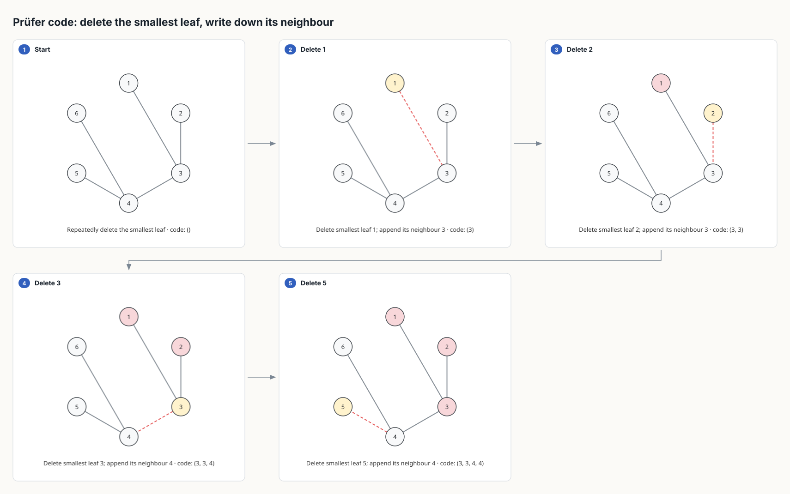
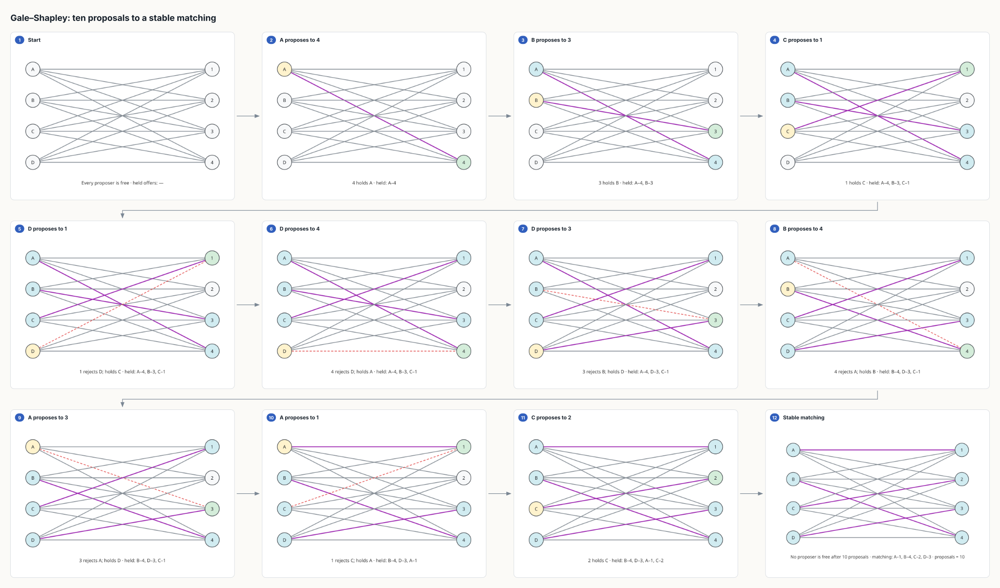
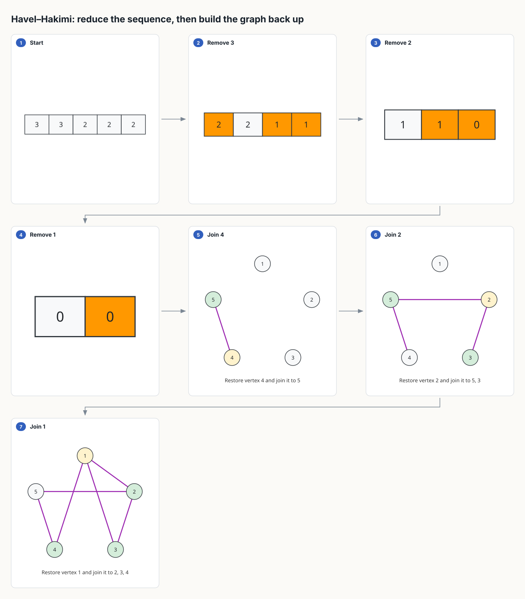
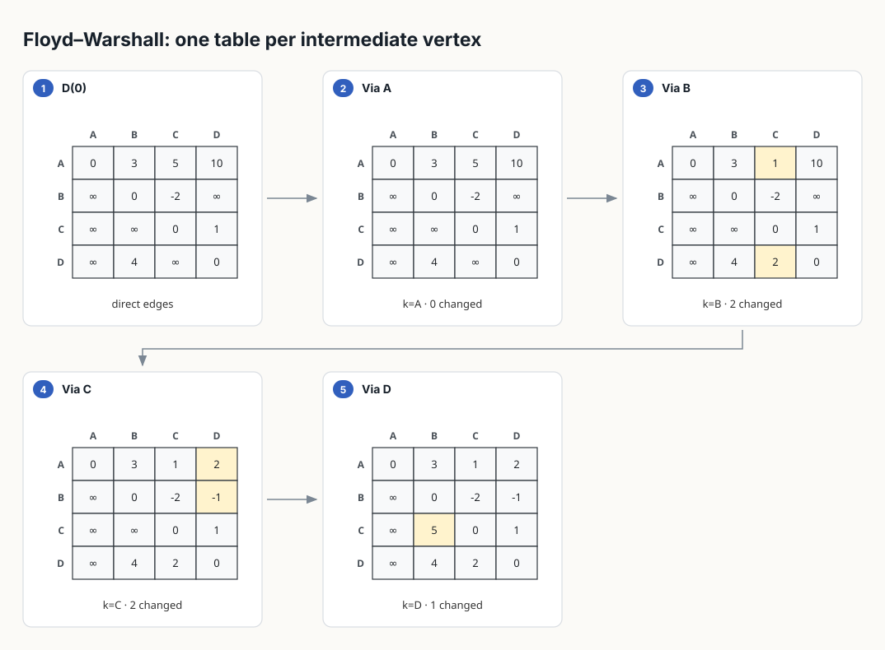
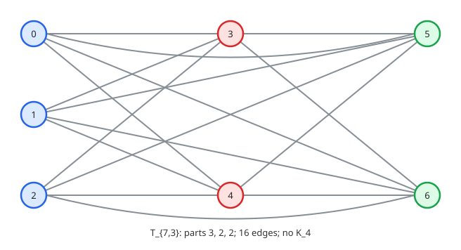

Graph theory, computed · 02
Fourteen more algorithms, each with the witness it refuses on
Graph algorithms
A graph-theory course — 24 modules and 10 interview modules — was written against the twelve algorithms in the first post. Wherever the figure it wanted did not exist, the author left a marker in the module with the exact request they had tried to send. Fourteen of those markers were algorithms. Release 0.8.0 draws every one of them the way the first twelve are drawn: the algorithm runs on the graph you pass in, the frames are its states, and a request the graph makes false is refused with the structure that proves it.
Four templates, eight algorithms, three storyboards finished.
turan, mycielski, floyd_warshall
and havel_hakimi are new; graph_algorithm
gains Prüfer encoding and decoding, Jordan tree centres, open-ear
decompositions, Gale–Shapley, bounded Hamiltonian search, edge
colouring and smallest-last degeneracy orderings; and strongly
connected components, topological sort and bipartite matching now
end where the lecture ends — on the condensation DAG, on the stated
tie-break, on the Hall violator. Every state is computed in
straightedge/graphs.py, and the storyboard is drawn from
the run.
A tree becomes a code, one leaf at a time

prufer_encode on the course's tree H. Each
panel deletes the smallest leaf and writes down its neighbour; the
code the caption accumulates is the one the module's exercise
asks for, and prufer_decode grows the same tree back
from it, one edge per panel.
The encoding takes an expect, and this is where a
storyboard earns its place in a lab. Hand it the code a student wrote
and it does not draw a tree labelled with the wrong answer; it stops
at the first position where the student's code and the computed one
disagree:
$ straightedge draw graph_algorithm --params '{"algorithm": "prufer_encode",
"nodes": [{"id":"1"},{"id":"2"},{"id":"3"},{"id":"4"}],
"edges": [{"from":"1","to":"3"},{"from":"2","to":"3"},{"from":"3","to":"4"}],
"expect": [3, 4]}'
'graph_algorithm' was refused: expected Prüfer code first differs at position 2: computed '3', expected '4'
Jordan's leaf-stripping works the same way. tree_center
removes every leaf in simultaneous rounds and reveals the one or two
centres only on the round that proves them — never a panel early —
with the eccentricities badged on the vertices if you ask. Hand it a
graph with a cycle and the refusal is the cycle, because a graph with
a cycle is not a tree and there is nothing else to say.
Proposals, held offers, rejections

stable_matching on the course's instance. Ten
proposals, three of them rejected; the panel line under each
frame is the set of offers currently held, which is the whole
state of the algorithm and the thing a student has to track by
hand.
The module's exercise is not "run Gale–Shapley". It is "here is a
matching; is it stable?" — and the answer is either yes or a
specific pair who would both rather be with each other. So the
template takes a check matching and refuses it with
exactly that pair:
$ straightedge draw graph_algorithm --params '{"algorithm": "stable_matching",
"proposers": {...}, "receivers": {...},
"check": {"A": "4", "B": "3", "C": "1", "D": "2"}}'
'graph_algorithm' was refused: authored matching is unstable: (D, 3) is a blocking pairBipartite matching gained the same kind of ending. When the last augmentation search fails, the storyboard no longer stops on "no augmenting path"; it highlights the alternating reach from the unsaturated vertex, names S and N(S), and states the strict Hall inequality that proves no perfect matching exists. That is the certificate the course asks students to produce, and now the figure produces it.
A sequence that is a graph, and one that is not

havel_hakimi with realize: true. The
reduction is an array storyboard and the realisation is a graph
storyboard; they are one template because the second half is
built by undoing the first, and the figure should say so.
The course's failing example is the sequence (3, 3, 3, 1). It is not graphic, and the reason is not a theorem; it is the specific step where the reduction asks a vertex for more neighbours than remain:
$ straightedge draw havel_hakimi --params '{"sequence": [3, 3, 3, 1]}'
'havel_hakimi' was refused: Havel–Hakimi reduction produced a negative entry: (1, -1)Tables, not arrows

floyd_warshall on the interview module's digraph.
One table per intermediate vertex, with only the entries that
vertex improved highlighted — which is the thing a hand-drawn
version always gets wrong, because the temptation is to
highlight the row and column of k instead.
One of the edges is negative, and that is fine; Floyd–Warshall does not care. A negative cycle is a different matter. The template runs the whole DP, watches the diagonal, and the moment an entry D[v,v] goes below zero it stops and says which one:
$ straightedge draw floyd_warshall --params '{"directed": true,
"nodes": [{"id":"A"},{"id":"B"},{"id":"C"}],
"edges": [{"from":"A","to":"B","weight":1},{"from":"B","to":"C","weight":-3},{"from":"C","to":"B","weight":1}]}'
'floyd_warshall' was refused: negative cycle detected: diagonal entry D[C,C] became negativeSearch that knows when to stop

hamiltonian_search on the octahedron as a native
animated SVG — the same frames as the storyboard, cross-faded
with SVG's own timing. The search explores the full state space
but emits at most max_frames, and the caption
reports how many states it actually visited.
The Petersen graph is the course's reason for this template: it has a Hamiltonian path and no Hamiltonian cycle, and students are asked to believe the second half. Ask the template for the cycle and it does not draw a plausible-looking one:
$ straightedge draw graph_algorithm --params '{"algorithm": "hamiltonian_search",
"start": "0", "expect": "cycle", "nodes": [...10 vertices...], "edges": [...15 edges...]}'
'graph_algorithm' was refused: no Hamiltonian cycle exists; exhausted 274 search statesThe state count is the point. "There is no cycle" is a claim; "274 states were searched and none closed" is a certificate a student can reproduce, and it is what the finding carries.
Built, not drawn

turan takes two integers and computes the rest:
parts as equal as possible, the cross-part edges, the edge count,
and the claim that no Kr+1 exists — verified
on the graph it built, not asserted from the formula.
mycielski is the same idea for a construction that has to
be seen to be believed: it copies your base graph as the
u layer, adds a shadow vertex vi joined
to each ui's neighbours, adds the hub w
joined to every shadow, then colours the result and checks that the
chromatic number rose by one while the graph stayed triangle-free.
On C5 that is the Grötzsch graph, and the
twelve-panel storyboard ends on the line the module wants written on
the board: χ(G) = 3, χ(M(G)) = 4,
triangle-free. Both templates enforce the eleven-vertex figure cap
on the graph they construct — M(G) has
2n + 1 vertices, so a base graph of more than five is
refused with the count rather than drawn as a thicket.
What each one needs, and what it refuses
| Algorithm | Needs | Refused with |
|---|---|---|
| Prüfer encode · decode | a tree, or a code | the cycle, or the first differing code position |
| Tree centre | a tree | the cycle or the components |
| Ear decomposition | 2-connected | the articulation vertex |
| Stable matching | complete strict preferences | the blocking pair |
| Hamiltonian search | a start, a frame budget | the found cycle, or the exhausted search |
| Edge colouring | — | the vertex two same-class edges share; an expectation below Δ |
| Degeneracy ordering | — | — |
| Havel–Hakimi | a degree sequence | the entry that went negative |
| Floyd–Warshall | directed, weights | the diagonal entry that went negative |
| Turán T(n,r) | two integers | r > n, or more than eleven vertices |
| Mycielski M(G) | a base graph of at most three vertices | the constructed vertex count |
| SCC · condensation | directed | — |
| Topological sort · tie-break | directed, input / fifo / min | the cycle; an unknown policy |
| Bipartite matching · Hall violator | a declared partition | an edge inside one side |
All of these are storyboards in the SVG lane, and every
graph_algorithm value is also an animated SVG with
animate: true. None of them is a Manim video yet; the
animation lane still holds its five concepts, and a course instance
that needs more than eight vertices in motion is still refused with
the count rather than rendered small.
What is left
The work list the course produced is closed, and what remains on it
is deliberately not an algorithm: multigraphs for Königsberg and the
Shannon triangle, a composite panel that keeps the heap beside
Dijkstra, list-valued faces for planar embeddings, and a
comparison that takes two figures instead of two
columns of text. Each of those changes the vocabulary a figure is
drawn in rather than adding a computation to it, which is why they
were fenced off from the fourteen above and why they come next.